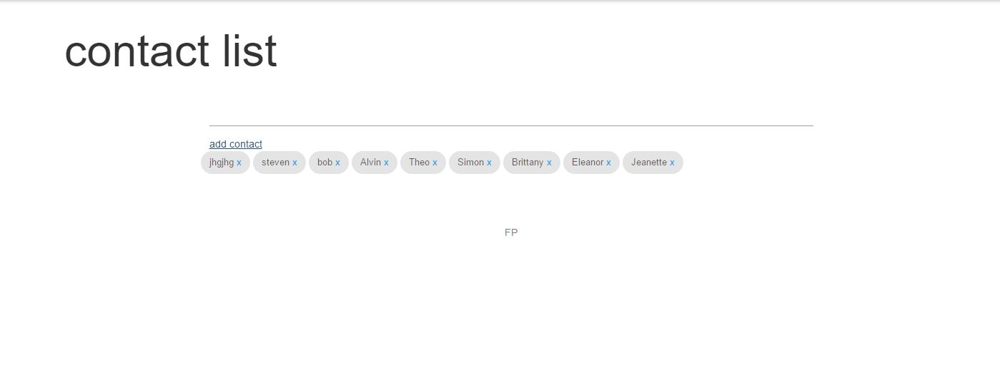

Friendpal
Pen pal app incorporating a translator. preview at

FriendPal
FriendPal is a communication application that allows students who do not speak the same language to communicate through letters and short messages by incorporating a translator feature. FriendPal uses University of Hawaii CAS system for now as a test, but can be easily modified to expand to larger demographics.
Changes
4/14: Implemented user interests. Combined user settings and profile. Added collections for user profiles. (still need forms to add data) Contact list now a list of close-able chips.
Features
functional: short messages, letters, contact list, state saving
in-development: state saving, user profile, user settings,
planned: matchmaking, translator using Google API, side-by-side viewing translated/non-translated letters, automatically translated messages, Rooms for online users, emoji
Installation
A live version of FriendPal will be available to view until March 24 2016. For installing to try on a local machine, do the following:
Install Meteor, Download this repository, cd to the app directory in a command prompt or terminal, run meteor using the settings file (use the meteor command below)
meteor --settings ../config/settings.development.json
Walkthrough
FriendPal is simple to use. You may navigate to the home page at any time by clicking the title on the top left and login or access your options from the menu at the top right. Before logging in, you may only use the translator of the app (which is not functional, yet).

After login you will have access to the messenger, which allows you to send and receive messages. From the top of the page: Personal and general short messages collapsible. Compose message collapsible, there is a dropdown menu that lists your contacts and a list of people who have recently (within 24 hours) sent you a message. New and past letters collapsible, shows letter-length messages, click to view the whole message.

Your contact list can be accessed from the top menu, you can add and delete contacts here.

Settings is where you may edit your user bio and user image that other users will see when they look at your profile. Here, you can also edit your interests that will later be used for matchmaking, as well as look at some of your statistics on the site.
Credits
FriendPal is built using Meteor and Materialize CSS development frameworks. Dr. Johnson's template was used as a base for this application and allows access to a test UH CAS login system. Packages used in Meteor: accounts-password, aldeed:autoform, aldeed:collection2, atoy40:accounts-cas, blaze-html-templates, check, ecmascript, ejson, es5-shim, ian:accounts-ui-bootstrap-3, iron:router, jquery, meteor-base, mobile-experience, momentjs:moment, mongo, random, sacha:spin, session, standard-minifiers, tracker, twbs:bootstrap, underscore.